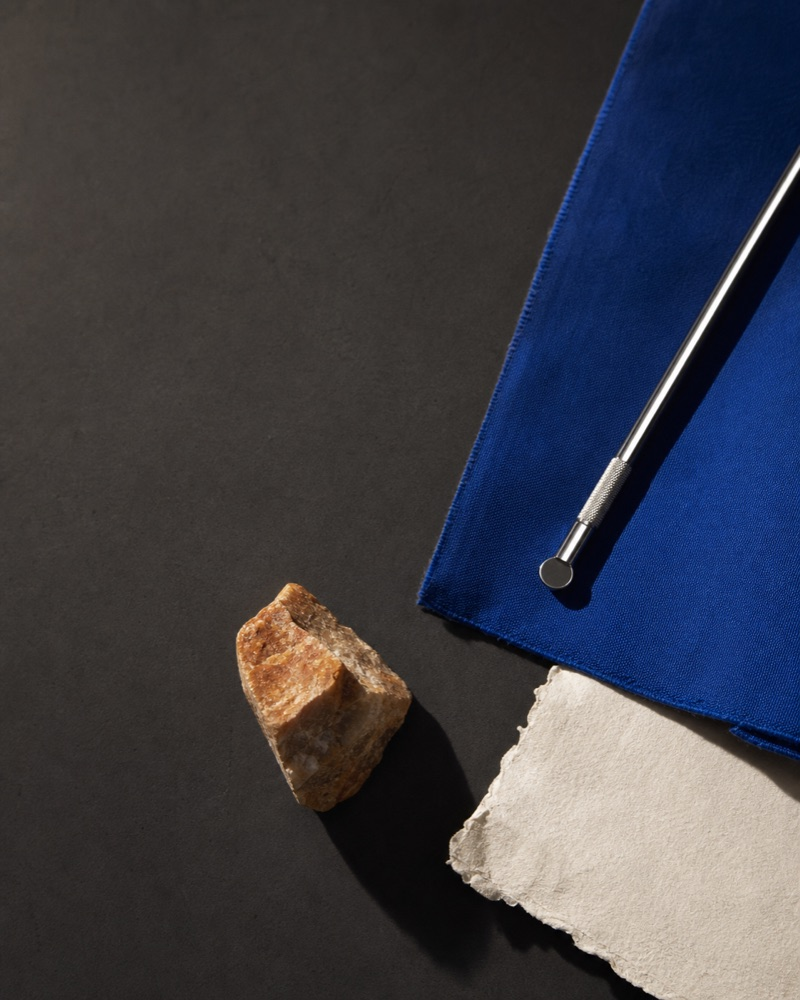

NORTH/COMMON
ISSUE 08 / FIELDWORK
Observe what usually slips past.
An independent journal of working landscapes, material intelligence, and useful detours.
NO SECTION SELECTED
An independent journal of working landscapes, material intelligence, and useful detours.
NO SECTION SELECTED